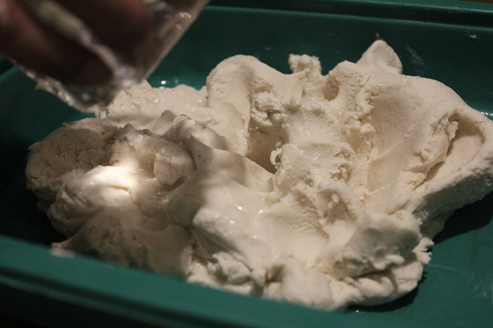
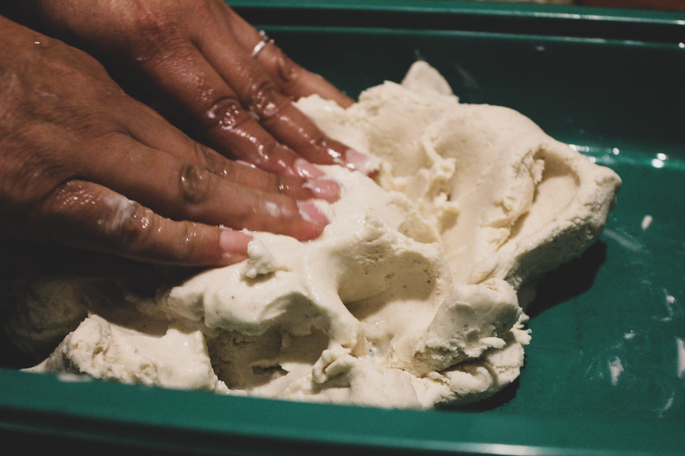

Ingredients for the tortilla: 1 poud of masa for tortillas
Ingredients for the salsa: 8 chiles guajillos, 3 tomatillos, 2-3 garlic cloves, and salt
To start we will need to work the masa
Cooking the tortillas on the comal
Making the picadita, picandola las tortillas cuando estan calientes.
Making the salsa
Putting it all together: assembling the picadita.


Throughout this process I asked my mom some questions about stories she can recall when she had picaditas back in Mexico. Here are some of the things she shared: